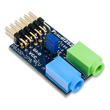

On the bench is a cheap Pmod I²S2 ADDA board, a tangle of Dupont wires and an STM32F407. It is the quickest way to get audio in and out of an MCU, and it is also where the HAL bugs start to show.
If you are really stubborn enough to get this audio processing thing going on an STM32 MCU, you might have discovered the excellent video series by YetAnotherElectronicChannel.
He uses one of those relatively cheap I²S boards from Pmod, stocked with Cirrus Logic chips. The big advantage of these tiny ADDA converters is that they don't need extra programming over I²C or SPI.


Sonically they are not the most brilliant and are rather susceptible to all kinds of weird interference. But to get the concept going: just fine.
I will not repeat everything he says about circular buffers or data type casting, so check those videos first. There are some problems, though.
One bug, one conceptual error
One of the most commonly used groups of STM chips is the STM32F407 (and 405). If you are going to use the HAL libraries — yes, you will — be aware that there is one bug and one conceptual error in the libraries used in full-duplex mode.
For future reference:
1. The DMA complete does not trigger the HAL_CompleteCallback.
2. Both DMA interrupts (send and receive) do trigger the callback, if you get 1 going.
In my comments on the YetAnotherElectronic videos and in that bug report you can find the workaround. Be aware that if you change the HAL libraries, CubeMX will change them back if you use the regenerate-code option.
Edit Feb 2022: somebody finally rewrote the HAL I²S EX libraries. Yeee!
A dedicated board
Now, with all that going, wouldn't it be nice to have a dedicated board instead of everything breadboarded and Dupont-wired?

This is one of my early attempts with some never-heard-of Chinese brand of ADDA that actually works quite well.
Again the mix of 'audiophile' capacitors in THT and SMD components. Which is much easier nowadays, as PCB manufacturers also provide SMD assembly services.